1. Introduction
 Ce tutoriel est à la fois
un support de cours et un deck
d’exercices visant à expliquer les tests statistiques et leur
mise en pratique sous R (notamment tests de Student et test du
Chi-2).
Ce tutoriel est à la fois
un support de cours et un deck
d’exercices visant à expliquer les tests statistiques et leur
mise en pratique sous R (notamment tests de Student et test du
Chi-2).
Les explications et données d’exemple pour ce tutoriel proviennent d’un ouvrage en ligne, le Grimoire: Contes et stats R disponible ici (voir notamment le Chapitre 4 Etablir le lien entre deux variables: tests d’hypothèse).
Vous pouvez également y trouver des chapitres portant sur d’autres méthodes classiques en statistique (description simple de variables, estimateurs, intervalles de confiance, modèles de régression, analyse de la variance, modèle linéaire généralisé).
— 1.1 Exercices de code
Ce document rassemble un certain nombre d’exercices, qui sont de deux types.
- Des exercices de type QCM.
- Des exercices de type code.
Dans ce deuxième type d’exercice, vous pourrez modifier du code dans une fenêtre (fond jaune pâle) qui est l’équivalent d’un éditeur (très simplifié) de code R. Pour exécuter les lignes de code, vous pouvez vous placer dessus et faire Ctrl+Enter. Le résultat s’affichera dans une fenêtre (fond rose pâle) en-dessous qui est l’équivalent d’une console R.
La consigne pour cet exercice d’exemple est la suivante:
Calculez le produit de a et b (qui ont été préalablement définis dans l’environnement).
produit=___
produitproduit=a*b
produitDans ce tutoriel l’environnement R est propre à chaque exercice, et je le prépare pour qu’il contienne les objets (par exemple jeux de données) et les packages nécessaires, installés et chargés.
— 1.2 Exercices type QCM
— 1.3 Brocéliande

|
Le jeu de données
|
Le jeu de données broceliande est disponible en ligne à cette adresse.
## 'data.frame': 864 obs. of 9 variables:
## $ age : num 5.228 20.942 50.651 12.566 0.419 ...
## $ espece : chr "chene" "chene" "chene" "chene" ...
## $ hauteur : num 219 179 302 265 110 ...
## $ gui : int 0 0 0 0 0 0 0 0 0 0 ...
## $ largeur : num 190 175 320 313 118 ...
## $ enchantement: logi TRUE TRUE TRUE FALSE TRUE FALSE ...
## $ fees : int 1 0 0 0 0 0 0 0 0 0 ...
## $ lutins : int 0 0 0 0 0 0 0 0 0 0 ...
## $ perlimpinpin: num 129 170 153 134 122 ...L’objectif des tests d’hypothèse est de déterminer si un effet observé à l’échelle de l’échantillon résulte d’un effet réel à l’échelle de la population, autrement dit, il s’agit de déterminer si l’effet observé est significatif et non pas simplement lié à l’aléa d’échantillonnage.
— 1.4 Châteaux et Boulots

|
Le jeu de données
|
Le jeu de données chateauxEtBoulots est disponible en
ligne à cette adresse.
## 'data.frame': 72 obs. of 4 variables:
## $ activite: chr "chevalerie" "chevalerie" "chevalerie" "chevalerie" ...
## $ genre : chr "masculin" "masculin" "masculin" "masculin" ...
## $ region : chr "bois-jolis" "bois-jolis" "bois-jolis" "bois-jolis" ...
## $ tenue : chr "bleue" "bleue" "grise" "rose" ...2. Test de Student
Bien qu’il existe une multitude de tests d’hypothèses (test de Student, test du Chi-2, test de Mann-Whitney, etc. en fonction du type de données et de la problématique considérés), la logique et les “mécanismes d’interprétation” sont toujours les mêmes.
Je vais commencer par expliquer dans le détail les principes et les mécanismes sous-jacents à un test statistique, en développant l’exemple d’un test particulier, le test de Student ou t-test.
— 2.1 Principe
Le t-test (ou test de Student) est conçu pour tester des différences de moyennes entre deux groupes.

|
Par exemple, on cherche à caractériser la quantité de poudre de
perlimpinpin contenue par la sève d’un arbre en fonction de la
nature enchantée ou non de celui-ci. On peut commencer
par décrire le lien entre ces deux variables à l’aide d’une table et
d’une figure montrant les distributions de la variable
perlimpinpin par groupe.
|
Ci-dessous on calcule la moyenne et la médiane de quantité de perlimpinpin pour chacun des groupes, ainsi que l’écart-type par groupe et l’effectif (n).
broceliande %>%
group_by(enchantement) %>%
summarise(moy=mean(perlimpinpin),
med=median(perlimpinpin),
sd=sd(perlimpinpin),
n=n()) On peut tracer les distributions à l’aide d’un graphique appelé “violinplot” (qui correspond, grosso modo, aux densités de probabilité représentées à la verticale).
ggplot(broceliande, aes(x=enchantement, y=perlimpinpin))+
geom_violin(fill="forestgreen", alpha=0.5)+
geom_point(data=broceliande %>% group_by(enchantement) %>% summarise(perlimpinpin=mean(perlimpinpin)),
shape=3,size=3,stroke=1)
A la vue du graphique et du tableau ci-dessus, on a bien l’impression que la quantité de perlimpinpin est plus importante pour les arbres enchantés que pour les autres, mais…
Avec la question ci-dessus, j’essaie de vous montrer que vous êtes capables de faire des inférences “non-statistiques”, qui font en fait appel à des notions de taille d’échantillon et de distribution des données qui sont fondamentales pour la réalisation de tests statistiques.
La réalisation de tests statistiques correspond à une formalisation du raisonnement que vous avez pu faire dans la question précédente, et qui permet de quantifier la probabilité que l’effet observé soit dû au hasard.
— 2.2 Formalisation
Je formalise mon problème par le modèle suivant:
\(perlimpinpin\) a une distribution \(\mathcal{N}(\mu_e,\sigma_e)\) pour les arbres enchantés, et \(\mathcal{N}(\mu_f,\sigma_f)\) pour les autres.
On se place ici dans une formalisation du t-test de Welch (une variante plus robuste du test de Student “classique”, puisqu’elle ne fait pas l’hypothèse que les variances sont égales dans les deux groupes).
Je définis mon hypothèse:
\(H_0:\{\mu_e=\mu_f\}\)
Selon cette hypothèse, il n’y a pas de différence réelle de moyenne entre les deux groupes (même si, de facto, il y a une différence observée).
Autrement dit, l’hypothèse que je cherche à tester statistiquement est celle selon laquelle “la quantité de perlimpinpin moyenne n’est pas différente selon les groupes” …
alors que mon hypothèse au sens “scientifique” était plutôt l’hypothèse inverse puisque j’ai en réalité l’intention de prouver que l’enchantement a un effet significatif sur la quantité de perlimpinpin!… Il faut donc faire attention à ne pas se mélanger les pinceaux…
Considérons la statistique suivante:
\[ T=\frac{\bar X_e-\bar X_f}{\sqrt{\frac{s_e^2}{n_e}+\frac{s_f^2}{n_f}}}=\frac{\bar X_e-\bar X_f}{\sqrt{eqm_e+eqm_f}} \]
où
- \(\bar{X_e}\) et \(\bar{X_f}\) sont les estimateurs de la moyenne (par groupe)
- \(s_e\) et \(s_f\) sont les estimateurs des écarts-types (par groupe)
- \(n_e\) et \(n_f\) sont les effectifs observés (par groupe)
Cette métrique est donc d’autant plus grande (en valeur absolue) que
- l’écart entre moyennes est important,
- les tailles d’échantillons sont importantes,
- la variance au sein de chaque groupe est petite.
Si notre hypothèse \(H_0\) était vraie alors cette statistique \(T\) devrait suivre une distribution de Student avec \(\nu\) degrés de liberté.
(Il s’agit d’un résultat mathématique, que je ne démontrerai pas ici!)
Le paramètre \(\nu\) correspond à:
\[ \nu=\frac{\left(\frac{s_e^2}{n_e}+\frac{s_f^2}{n_f}\right)^2}{{(\frac{s_e^2}{n_e})}^2\frac{1}{n_e-1}+{(\frac{s_f^2}{n_f})}^2 \frac{1}{n_f-1}}=\frac{(eqm_e+eqm_f)^2}{eqm_e^2\ \frac{1}{n_e-1}+eqm_f^2\ \frac{1}{n_f-1}} \]
On peut calculer les valeurs \(t_{obs}\) (valeur de \(T\) pour les observations) et \(\nu\) “à la main”:
broc_test=broceliande %>%
group_by(enchantement) %>%
summarise(m=mean(perlimpinpin),
s2=sd(perlimpinpin)^2,
n=n()) %>%
mutate(eqm=s2/n,
w=1/(n-1)) %>%
mutate(eqmw=w*eqm^2)
valeurs_obs=broc_test %>%
summarise(t_obs=diff(m)/sqrt(sum(eqm)),
nu=sum(eqm)^2/sum(eqmw))
valeurs_obsVoici la distribution de Student à \(\nu\)=239 degrés de liberté -i.e. la distribution que \(T\) doit suivre, théoriquement, si l’hypothèse \(H_0\) est vraie- et voilà (en rouge) comment se situe la valeur observée de T pour notre échantillon (\(t_{obs}\)):

Comme on peut le voir sur ce graphique, la valeur que l’on observe pour T est très “excentrée” par rapport à la distribution théorique sous hypothèse \(H_0\).
En effet, la probabilité d’observer une valeur au moins aussi excentrée (à droite ou à gauche) sous hypothèse \(H_0\), ou p-value est de 8.58
C’est cette valeur de probabilité qui est représentée par la surface coloriée en rose dans le graphique ci-dessus.
Si la p-value est particulièrement petite, cela tend à prouver que la valeur observée de \(T\) est peu probable sous hypothèse \(H_0\). Cela amène donc à remettre en question l’hypothèse (et non l’observation!!).
enchantement sur perlimpinpin 🪄.
La valeur \(\alpha\) est souvent, par convention, 5% (il arrive aussi que l’on voie 10%, 1%, etc.). Cette valeur n’est pas un repère absolu (si vous êtes à 5.1% plutôt qu’à 4.9% ça ne devrait pas fondamentalement changer votre conclusion…).
— 2.3 Erreurs
Quand on réalise un test d’hypothèse, on l’interprète généralement en fonction d’une valeur seuil \(\alpha\).
Cette valeur seuil \(\alpha\) abordée précédemment correspond en fait à un risque d’erreur de type I que l’on est “prêt à accepter”.
Faire une erreur de type I, ça consiste à rejeter l’hypothèse nulle alors qu’elle est vraie (c’est-à-dire, affirmer qu’une différence est significative alors que ce n’est pas le cas). Le risque d’erreur de type I est souvent noté \(\alpha\)
Faire une erreur de type II, au contraire, ça consiste à ne pas rejeter l’hypothèse nulle alors qu’elle est fausse (c’est-à-dire, ne pas conclure que la différence est significative alors qu’elle existe vraiment). Le risque d’erreur de type II est souvent noté \(\beta\).
| Cas | \(H_0\) rejetée (🙂 “effet”) | \(H_0\) acceptée (😐 “pas d’effet”) |
|---|---|---|
| \(H_0\) vraie (pas d’effet) | 🔴 erreur de type I (\(\alpha\)) | 🟢 CORRECT |
| \(H_0\) fausse (effet) | 🟢 CORRECT | 🔴 erreur de type II (\(\beta\)) |
La puissance d’un test est égale à 1-\(\beta\) i.e. elle correspond à la probabilité de détecter un effet quand il existe (\(H_0\) est fausse et on rejette \(H_0\)).
Quand on choisit de réaliser un test avec un risque \(\alpha\) particulièrement bas, alors le risque \(\beta\) est particulièrement élevé, c’est à dire qu’on le fait au détriment de la puissance du test (c’est-à-dire que plus on minimise le risque de dire qu’il y a un effet alors qu’il n’y en a pas, plus on maximise le risque de “passer à côté” d’un effet qui existe).
— 2.4 Pratique
En pratique, pour réaliser un t-test sous R, on n’a pas besoin de faire à la main toutes les étapes du calcul de la statistique T et de \(\nu\) détaillé précedemment (ouf!). Il existe évidemment des fonctions dans R pour faciliter la tâche.
La fonction de base est t.test():
mytest=t.test(perlimpinpin~enchantement, data=broceliande)
print(mytest)##
## Welch Two Sample t-test
##
## data: perlimpinpin by enchantement
## t = -8.5849, df = 238.54, p-value = 1.188e-15
## alternative hypothesis: true difference in means between group FALSE and group TRUE is not equal to 0
## 95 percent confidence interval:
## -19.73761 -12.36994
## sample estimates:
## mean in group FALSE mean in group TRUE
## 117.1636 133.2174Et voilà ⚡! comme vous pouvez le constater, cela prend plus longtemps d’expliquer le principe et l’interprétation d’un test de Student que de le réaliser avec R!
Plusieurs informations s’affichent:
- le nom du test (t-test de Welch pour deux échantillons)
- certains éléments qui interviennent dans le calcul d’une p-value (valeur de métrique observée t, nombre de degrés de liberté df)
- la p-value elle-même
- l’hypothèse alternative (et non pas \(H_0\)) selon laquelle la différence de moyenne entre les groupes n’est pas égale à 0
- un intervalle de confiance à 95% pour cette différence de moyenne
- les moyennes estimées pour chaque groupe
On retrouve notamment la valeur \(t_{obs}\), \(\nu\) (nombre de degrés de liberté) et la p-value calculés “à la main” dans le paragraphe précédent, et qui nous permettent de rejeter l’hypothèse H0 i.e. conclure que l’enchantement de l’arbre a bien un effet sur la quantité de perlimpinpin qu’il produit.
|
Considérez à nouveau le jeu de données Examinez les effectifs de chêne dans chaque groupe (arbres enchantés ou non) et réalisez le test qui permet de tester l’hypothèse \(H_0\) selon laquelle l’enchantement de l’arbre n’a pas d’effet sur la quantité de perlimpinpin qu’il produit. L’environnement ci-dessous est préparé de sorte que y sont disponibles:
|

|
# Examinez les effectifs
___(broceliande_chenes$enchantement)
# Réalisez le test
t.test(______~______, data=____)# Examinez les effectifs
table(broceliande_chenes$enchantement)
# Réalisez le test
t.test(perlimpinpin~enchantement, data=broceliande_chenes)— 2.5 Pratique avec infer
|
|
Outre la fonction t.test de “base”, il est également possible d’utiliser le package “infer” pour réaliser un t-test “à la tidyverse” (i.e. selon une syntaxe qui décompose les étapes du calcul/raisonnement) |
Voici une manière de décomposer la réalisation d’un test:
|
Ainsi, pour réaliser un test de Student avec
|
mod_et_hyp=broceliande %>%
specify(perlimpinpin ~ enchantement)
dist_null=mod_et_hyp %>%
assume(distribution="t")
stat_obs=mod_et_hyp %>%
calculate(stat="t", order=c("TRUE","FALSE")) %>%
pull(stat)
p_value=get_p_value(dist_null,stat_obs, direction="greater")
p_value Remarque: on a ici une valeur de p-value très légèrement
différente de celle qu’on obtenait avec la fonction t.test.
La raison à cela est que t.test réalise par défaut un
t-test de Welch et que la fonction infer réalise un t-test
de Student classique.
Enfin, on peut utiliser ces éléments pour visualiser la distribution de la statistique de Student sous hypothèse nulle et la valeur de la statistique observée (et ainsi visualiser la p-value).
visualize(dist_null)+
shade_p_value(stat, direction="greater")
3. Validité du t-test
Refaisons un pas en arrière… Jusqu’à présent j’ai supposé que les données permettaient de réaliser un test de Student. Mais qu’en est-il vraiment?
Revenons aux conditions nécessaires à la validité du t-test.
Rappelez-vous comment j’ai spécifié mon modèle:
\(perlimpinpin\) a une distribution \(\mathcal{N}(\mu_e,\sigma_e)\) pour les arbres enchantés, et \(\mathcal{N}(\mu_f,\sigma_f)\) pour les autres.
Ainsi, on connaît la distribution de la statistique \(T\) sous hypothèse \(H_0\), mais aussi sous réserve que la distribution de \(perlimpinpin\) dans chaque groupe défini par \(enchantement\) soit normale (i.e. gaussienne).
— 3.1 Distribution normale / gaussienne
| Une distribution normale ou gaussienne est une distribution symétrique, centrée sur sa moyenne, et dont la forme est déterminée par son écart-type. |

|
Voici par exemple les distributions de deux variables générées selon une gaussienne (à gauche) et une loi non-gaussienne (à droite).
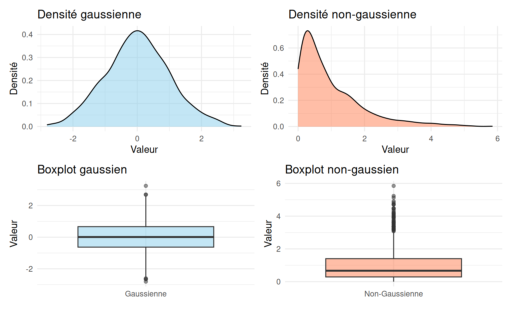
Examinez quelques exemples de situations ci-dessous où l’on essaie d’évaluer visuellement si la distribution de la variable à expliquer dans chacun des groupes peut être considérée comme gaussienne ou non.

— 3.2 Effectifs
Que faire alors si l’on est dans un cas où manifestement la distribution par groupes n’est pas gaussienne?
Que se passe-t-il si ce n’est pas le cas? (… et en l’occurrence, ce n’est pas le cas). Voyez plutôt, si l’on réaliste un test de Shapiro-Wilk pour tester la normalité des données (pour chaque groupe), ce test rejette l’hypothèse de distribution normale de perlimpinpin pour les arbres non-enchantés:
##
## Shapiro-Wilk normality test
##
## data: perlimpinpin_enchantes
## W = 0.99241, p-value = 0.5341##
## Shapiro-Wilk normality test
##
## data: perlimpinpin_nonenchantes
## W = 0.99508, p-value = 0.02479En fait, comme dans le cas du Théorème Central Limite, quand bien même l’hypothèse de normalité des résidus ne serait pas respectée, la distribution de \(T\) tend bien vers une distribution de Student à \(\nu\) degrés de liberté pour des tailles d’échantillon “suffisamment grandes”.
Tout le sel de la situation consiste à estimer la valeur pour laquelle on estime que la taille d’échantillon est “suffisamment grande” (ce seuil étant d’autant plus élevé que la distribution des résidus est éloignée de la distribution normale) pour pouvoir appliquer le t-test quand bien-même l’hypothèse de normalité ne serait pas respecté…
— 3.3 Théorème Central Limite
Dans certains cas, on peut considérer que les effectifs par groupe sont assez élevés pour que la condition de distribution gaussienne ne soit pas strictement nécessaire à la validité du test. En effet, la distribution de \(T\) tend vers une distribution de Student à \(\nu\) degrés de liberté asymptotiquement: si les tailles d’échantillon sont “suffisamment grandes” la distribution de la statistique sera proche de cette distribution théorique. Cela découle du Théorème Central Limite qui dit que la distribution de la moyenne d’un échantillon tend vers une gaussienne lorsque la taille de l’échantillon est grande.
💡Souvent, on considère que s’il y a plus de 30 individus par groupe, alors on peut considérer que la distribution de \(T\) est suffisamment proche d’une distribution de Student pour que le test soit valide ✅ … mais il s’agit d’une règle empirique et non d’une règle mathématique!
Cette idée de “distribution asymptotique” est assez compliquée à comprendre mathématiquement, mais nous pouvons ce genre de phénomène par une simulation…
| On procède à plusieurs tirages de X, de taille \(N=10\) (donc plutôt petits), dans une distribution non-gaussienne (distribution représentée en vert). Pour chacun de ces échantillons, on calcule la moyenne (droite violette). |
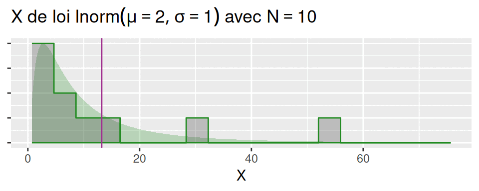 |
| On fait cela de très, très nombreuses fois (ici, 10 000 fois), et du coup on peut observer la distribution de moyennes afichée ci-contre… |
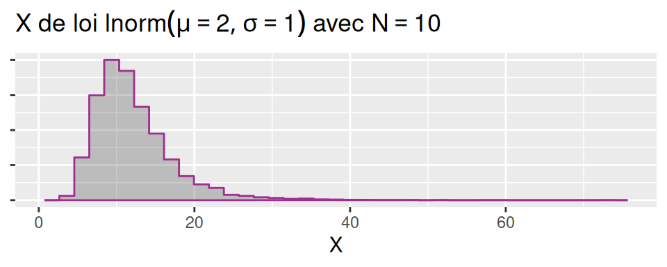 |
| Bon, ben, du coup, on ne sait pas très bien quelle loi suit la moyenne. En tout cas elle ne suit pas tout à fait la loi \(\mathcal{N}(\mu,\sigma)\)) (représentée en mauve à l’arrière-plan). |
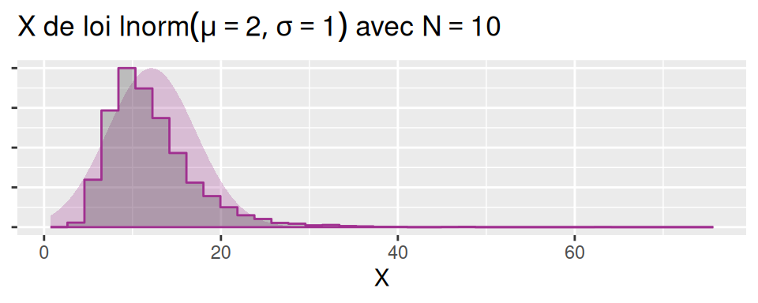 |
| Que se passe-t-il pour une taille d’échantillon plus importante? Ici pour N=30: |

|
| Ici pour N=60: |
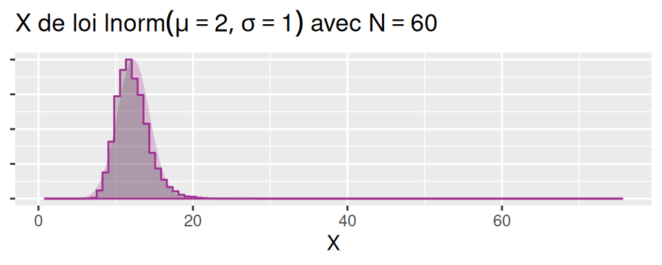 |
Par la barbe de Merlin! On dirait que plus \(N\) est grand, et plus la distribution se rapproche de la loi \(\mathcal{N}(\mu,\sigma)\)!
Ce résultat, c’est ce qu’on appelle le Théorème Central Limite… Ce théorème stipule que “pour N suffisamment grand”, la distribution de la moyenne \(\bar X\) (moyenne d’une variable \(X\) ayant une distribution quelconque, une moyenne \(\mu\) et un écart-type \(\sigma\)) est \(\mathcal{N}(\mu,\sigma/\sqrt{N})\).
— Test de Student non paramétrique
Si l’on est face à une situation où les résidus ne sont pas gaussiens et les tailles d’échantillons sont limitées (de sorte qu’il semble difficile d’appliquer les conclusions du Théorème Central Limite), il peut être nécessaire de recourir à ce qu’on appelle des “tests non paramétriques” (qui ne reposent pas sur une hypothèse de distribution particulière).
|
Ainsi, pour réaliser un test de Student avec
|
Le package infer permet de transformer facilement un
certain nombre de tests (et en particulier ici, le test de Student) en
leur équivalent non-paramétrique. Pour cela, il va approximer la
distribution théorique des échantillons par leur distribution
observée… C’est à dire que plutôt que se reposer sur des
modèles mathématiques théoriques pour la distribution des échantillons
et en déduire la distribution de la statistique sous hypothèse nulle, on
va considérer que les observations elles-mêmes fournissent la
distribution des échantillons et que l’on peut s’en servir pour déduire
la distribution de la statistique de Student sous hypothèse nulle.
Concrètement, il va procéder comme suit, en réalisant de nombreuses fois les opérations suivantes:
- étiqueter au hasard les individus selon les modalités de la variable définissant les groupes (et selon les effectifs observés)
- calculer la statistique \(T\) pour ce jeu de données (généré, donc, sous hypothèse que la variable qui définit le groupe et la réponse quantitative soient indépendants)
On obtient ainsi la distribution de la statistique \(T\) sous hypothèse d’indépendance pour les distributions observée (ici estimation de la distribution basée sur 1000 permutations).
|
🧚🌳🧚🌳🧚 Examinons la relation entre le nombre de fées habitant dans un arbre et le fait que l’arbre ait été enchanté ou non, à l’aide d’un test de Student non-paramétrique réalisé avec le package infer: |
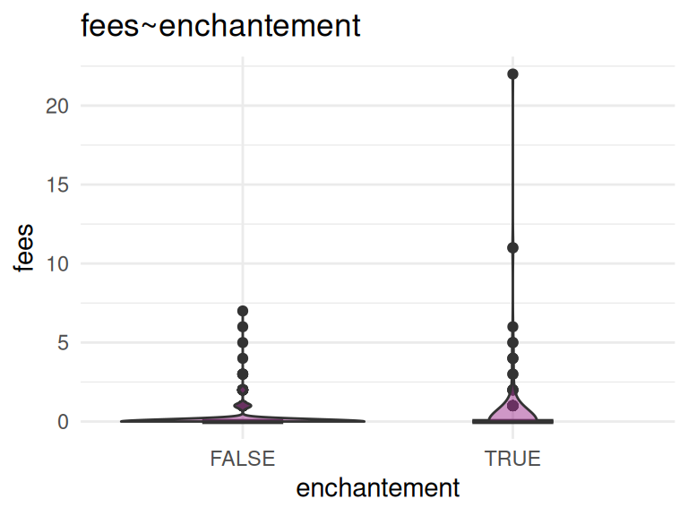 |
mod_et_hyp=broceliande %>%
specify(fees ~ enchantement) %>%
hypothesize(null="independence")
print(head(mod_et_hyp))## Response: fees (numeric)
## Explanatory: enchantement (factor)
## Null Hypothesis: ...
## # A tibble: 6 × 2
## fees enchantement
## <dbl> <fct>
## 1 1 TRUE
## 2 0 TRUE
## 3 0 TRUE
## 4 0 FALSE
## 5 0 TRUE
## 6 0 FALSEt_obs=mod_et_hyp %>%
calculate(stat="t", order=c(TRUE,FALSE)) %>%
pull(stat)
print(t_obs)## t
## 2.329521dist_null=mod_et_hyp %>%
generate(reps=1000,type="permute") %>%
calculate(stat="t", order=c(TRUE,FALSE))
print(head(dist_null))## Response: fees (numeric)
## Explanatory: enchantement (factor)
## Null Hypothesis: ...
## # A tibble: 6 × 2
## replicate stat
## <int> <dbl>
## 1 1 -0.292
## 2 2 -0.833
## 3 3 -0.0446
## 4 4 -0.0522
## 5 5 -1.79
## 6 6 -0.324p_value=get_p_value(dist_null,t_obs, direction="greater") %>%
pull()
print(p_value)## [1] 0dist_null %>%
visualize(method="simulation") +
shade_p_value(obs_stat=t_obs,
direction="greater")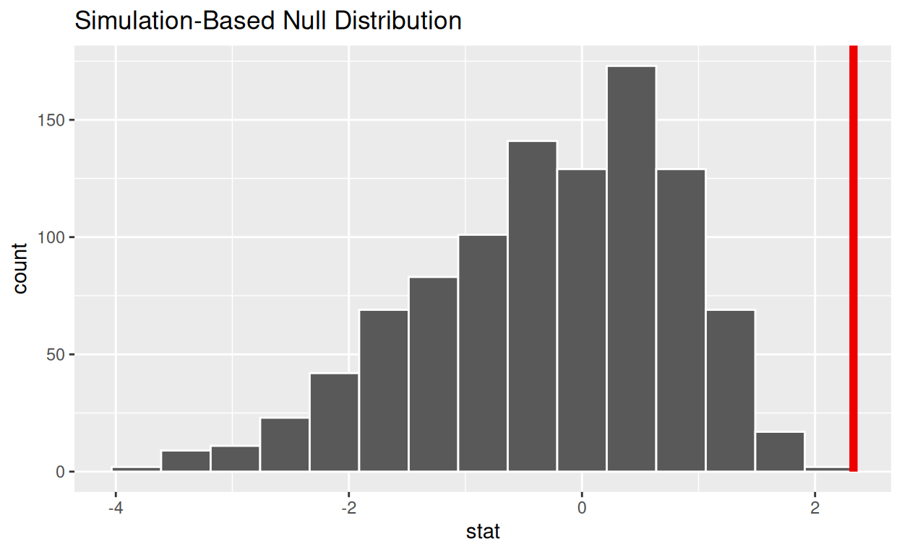
|
A vous de faire maintenant. Essayez de voir si l’enchantement des sapins influe significativement la quantité de poudre de perlimpinpin, en prenant en compte le fait que la distribution de perlimpinpin par groupe ne semble pas gaussienne. L’environnement ci-dessous est préparé de sorte qu’on y a déjà executé les commandes suivantes: |
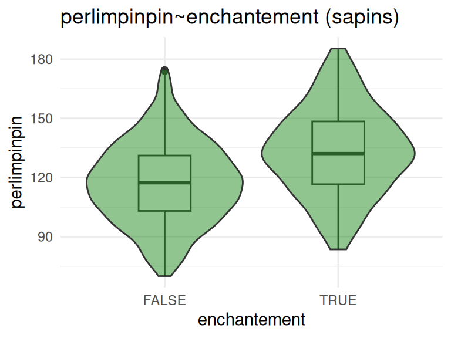 |
Complétez les commandes suivantes pour finir d’exécuter et interpréter le test:
t_obs=mod_et_hyp %>%
_________(stat="t", order=c(TRUE,FALSE)) %>%
pull(stat)
t_obs
p_value=___________(dist_null,t_obs, direction="greater") %>%
pull()
p_value
dist_null %>%
_______(method="simulation") +
_______(obs_stat=______,
direction="greater")t_obs=mod_et_hyp %>%
calculate(stat="t", order=c(TRUE,FALSE)) %>%
pull(stat)
t_obs
p_value=get_p_value(dist_null,t_obs, direction="greater") %>%
pull()
p_value
dist_null %>% visualize(method="simulation") +
shade_p_value(obs_stat=t_obs,
direction="greater")4. Test du Chi-2
Révisons (suite à ce que l’on a vu sur le test de Student) le prrincipe général d’un test d’hypothèse paramétrique:
- On considère un modèle statistique décrivant nos données
- On considère une certaine hypothèse \(H_0\) concernant les paramètres du modèle
- On considère une métrique \(S\) (il s’agit d’une variable aléatoire), dont la nature dépend du test réalisé.
- On calcule sa distribution théorique en se basant sur le modèle assorti de l’hypothèse \(H_0\).
- On calcule la valeur prise par \(S\) pour les observations: on obtient ainsi la mesure \(S_{obs}\). \(S_{obs}\) est une réalisation de la variable \(S\).
- On regarde où se place \(S_{obs}\) par rapport à distribution théorique de \(S\): on calcule la probabilité que \(S\) soit au moins aussi “extrême” que \(S_{obs}\). C’est cette probabilité qui constitue la p-value.
Dans tous les cas, lorsque l’on réalise un test statistique, il faut être très attentif aux éléments suivants:
- Les hypothèses du modèle sous-jacent au test (par exemple, pour le t-test, la variable d’intérêt doit être de distribution gaussienne. En revanche, le fait que vous utilisiez le t-test de Welch et non de Student vous permet de supposer que la variance est différente dans les deux groupes)
- La nature de l’hypothèse \(H_0\) (Si vous vous trompez sur la nature de cette hypothèse, alors vous vous tromperez dans la manière dont vous interprétez les résultats du test!)
— 4.1 Principe du test du Chi-2

|
Examinons par exemple le jeu de données chateauxEtBoulots
et plus particulièrement le lien entre le genre et l’activité de nos
personnages de contes de fée… On sait comment décrire le
lien entre ces deux variables catégorielles par un
tableau de contingences. Voyons maintenant comment l’on
peut tester la significativité de ce lien.
|
On peut représenter les effectifs de chaque groupe d’activité en fonction du genre comme ci-dessous
ggplot(chateauxEtBoulots,aes(x=activite))+
geom_bar(aes(fill=genre))
Une table permet aussi d’évaluer le lien entre ces deux variables:
chateauxEtBoulots %>%
group_by(activite,genre) %>%
tally() %>%
ungroup()| activite | genre | n |
|---|---|---|
| chevalerie | masculin | 18 |
| enchantements | feminin | 13 |
| enchantements | masculin | 3 |
| magie_noire | feminin | 14 |
| magie_noire | masculin | 8 |
| royaute | feminin | 9 |
| royaute | masculin | 7 |
Souvent, dans ce genre de problématique, on choisit de montrer un tableau croisé (tableau de contingence) de ce type:
table(chateauxEtBoulots$activite, chateauxEtBoulots$genre)| feminin | masculin | |
|---|---|---|
| chevalerie | 0 | 18 |
| enchantements | 13 | 3 |
| magie_noire | 14 | 8 |
| royaute | 9 | 7 |
Considérons la distribution de chacune des variables (il y a 72 observations en tout):
chateauxEtBoulots %>%
group_by(genre) %>%
tally() %>%
mutate(prop=n/sum(n))| genre | n | prop |
|---|---|---|
| feminin | 36 | 0.5 |
| masculin | 36 | 0.5 |
chateauxEtBoulots %>%
group_by(activite) %>%
tally() %>%
mutate(prop=n/sum(n))| activite | n | prop |
|---|---|---|
| chevalerie | 18 | 0.2500000 |
| enchantements | 16 | 0.2222222 |
| magie_noire | 22 | 0.3055556 |
| royaute | 16 | 0.2222222 |
Si il n’y avait aucun lien entre le genre et l’activité (hypothèse \(H_0\)) alors la proportion homme-femme dans chacune des activités devrait être la même (ici 50-50). On devrait donc avoir 9 chevalier homme et 9 chevalier femme, 9 enchanteurs et 9 enchanteuses, 11 sorciers et 11 sorcières, et 8 rois ou princes et 8 reines ou princesses. On est capable de déduire les effectifs attendus pour chacun des croisements sous hypothèse nulle…
— 4.2 Statistique du Chi2
Reprenons les explications ci-dessus de manière un peu plus formelle…
On peut noter les effectifs observés dans chacune des J cases du tableau \(\bar {N_i}\) et les effectifs attendus \(N_i\).
A partir de ces deux tableaux, une statistique du Chi-2 (écrite \(\chi^2\)) peut être calculée et utilisée pour tester l’hypothèse d’indépendance entre les deux variables catégorielles. La statistique du \(\chi^2\) correspond à :
\[\chi^2=\sum_{i=1}^{J}\frac{(\bar{N_i}-N_i)^2}{N_i}\] Sous hypothèse d’indépendance, et sous réserve que les effectifs attendus par case soient suffisamment importants (classiquement, n>5), cette statistique \(\chi^2\) est censée suivre une distribution du \(\chi^2\) à \(J-2\) degrés de liberté.
C’est ce résultat (mathématique) qui permet de fournir une p-value qui correspond à la probabilité d’obtenir une valeur de \(\chi^2\) supérieure à celle qui est calculée sur les observations.
— 4.3 Pratique
En pratique, voilà comment l’on peut réaliser un test du Chi-2 sous R:
montest=chisq.test(table(chateauxEtBoulots$genre,chateauxEtBoulots$activite))
print(montest)##
## Pearson's Chi-squared test
##
## data: table(chateauxEtBoulots$genre, chateauxEtBoulots$activite)
## X-squared = 26.136, df = 3, p-value = 8.931e-06Ici la p-value est très petite, montrant (comme on s’y attendait) que les deux variables ne sont pas indépendantes.
On peut examiner plus avant les éléments renvoyés par ce test de la manière suivante:
names(montest)## [1] "statistic" "parameter" "p.value" "method" "data.name" "observed"
## [7] "expected" "residuals" "stdres"On retrouve ainsi, entre autres choses, des éléments d’information concernant
- les effectifs observés
montest$observed##
## chevalerie enchantements magie_noire royaute
## feminin 0 13 14 9
## masculin 18 3 8 7- les effectifs attendus sous hypothèse d’indépendance
montest$expected##
## chevalerie enchantements magie_noire royaute
## feminin 9 8 11 8
## masculin 9 8 11 8— 4.4 Petits effectifs
Un test du \(\chi^2\) est construit en supposant que les effectifs \(\bar N_j\) sont “suffisants”). Ainsi, quand certaines cases du tableau de contingence comprennent trop peu d’individus, appliquer un test du \(\chi^2\) peut causer un “warning” stipulant que l’approximation du \(\chi^2\) est peut être incorrecte.
Considérez le lien entre l’activité et la couleur de tenue dans le
tableau chateauxEtBoulots
ggplot(chateauxEtBoulots, aes(x=activite,fill=tenue))+
geom_bar()+
scale_fill_manual(values=c("bleue"="#88aed0", "rose"="#d088ae","noire"="#000000",
"verte"="#aed088","grise"="#aaaaaa"))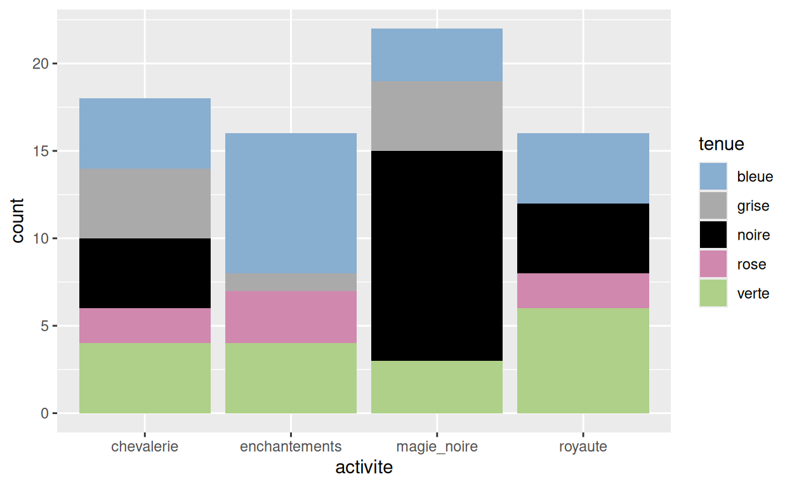
Réalisez un test du Chi-2 pour tester le lien:
contingence=_______(chateauxEtBoulots$___,chateauxEtBoulots$___)
test=_______(_______)
testcontingence=table(chateauxEtBoulots$tenue,chateauxEtBoulots$activite)
test=chisq.test(contingence)
test— 4.5 Test du Chi-2 non-paramétrique
Le package infer permet, dans ce genre de situation
(effectifs attendus insuffisants), de calculer une p-value en
passant par des permutations plutôt qu’en utilisant la
distribution théorique de la statistique du \(\chi^2\) qui s’applique pour des effectifs
observés importants.
Le principe des permutations réalisées ici est de réaliser de nombreuses fois l’opération suivante:
- étiqueter au hasard les individus selon les modalités du premier facteur (et selon les effectifs observés pour celui-ci)
- étiqueter au hasard les individus selon les modalités du second facteur (et selon les effectifs observés pour celui-ci)
- calculer la statistique du \(chi^2\) pour ce jeu de données (généré, donc, sous hypothèse que les deux facteurs soient indépendants)
On obtient ainsi la distribution de la statistique \(chi^2\) sous hypothèse d’indépendance pour les effectifs observés de l’un et l’autre facteur (aussi déséquilibrés et faibles soient-ils).
|
Ainsi, pour réaliser un test de Student avec
|
mod_et_hyp=chateauxEtBoulots %>%
specify(tenue~activite) %>%
hypothesize(null="independence")
dist_null=mod_et_hyp %>%
generate(reps=1000, type="permute") %>%
calculate(stat="Chisq")
chi2_obs=mod_et_hyp %>%
calculate(stat="Chisq") %>%
pull(stat)
chi2_obs## X-squared
## 25.56385p_value=get_p_value(dist_null,chi2_obs, direction="greater") %>%
pull()
p_value## [1] 0.012dist_null %>% visualize(method="simulation") +
shade_p_value(obs_stat=chi2_obs,
direction="greater")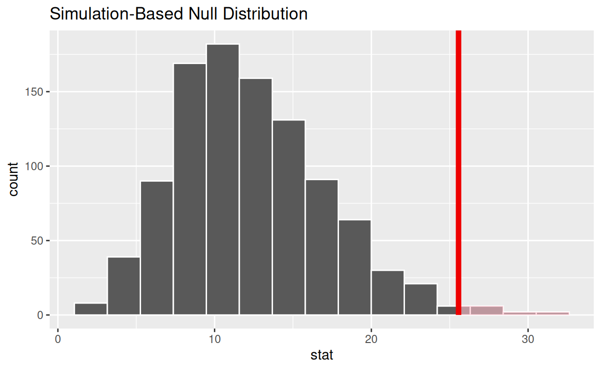
On obtient ainsi la distribution réelle de la statistique du \(\chi^2\) sous hypothèse d’indépendance, et la valeur de la p-value . Ici, on remarque que la p-value est quasiment inchangée selon la méthode de calcul (distribution théorique ou par permutations)!
On est bien en mesure d’affirmer que la couleur de tenue des personnages dépend de leur activité.
On reprend l’exercice précédent…
Considérez le tableau chateauxEtBoulots et les variables
tenue et region. Les tendances en terme de
couleurs de tenue sont-elles bien significativement différentes en
fonction de la région de Fantaisie?…
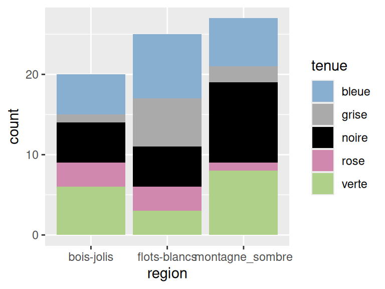
Répondez à cette question à l’aide du package infer et
des permutations, de sorte de ne pas être gêné par le faible effectif
dans certaines cases du tableau de contingence…
Dans votre environnement j’ai déjà fait tourner les lignes de commande suivantes:
mod_et_hyp=chateauxEtBoulots %>%
specify(tenue~region) %>%
hypothesize(null="independence")
dist_null=mod_et_hyp %>%
generate(reps=1000, type="permute") %>%
calculate(stat="Chisq")chi2_obs=mod_et_hyp %>%
calculate(stat=_____) %>%
pull(stat)
chi2_obs
p_value=get_p_value(dist_null,chi2_obs, direction="greater") %>%
pull()
p_value
dist_null %>%
visualize(method="simulation") +
shade_p_value(obs_stat=___,
direction="greater")chi2_obs=mod_et_hyp %>%
calculate(stat="Chisq") %>%
pull(stat)
chi2_obs
p_value=get_p_value(dist_null,chi2_obs, direction="greater") %>%
pull()
p_value
dist_null %>%
visualize(method="simulation") +
shade_p_value(obs_stat=chi2_obs,
direction="greater")